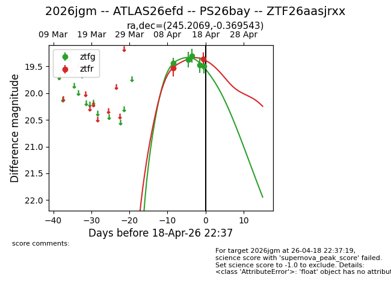
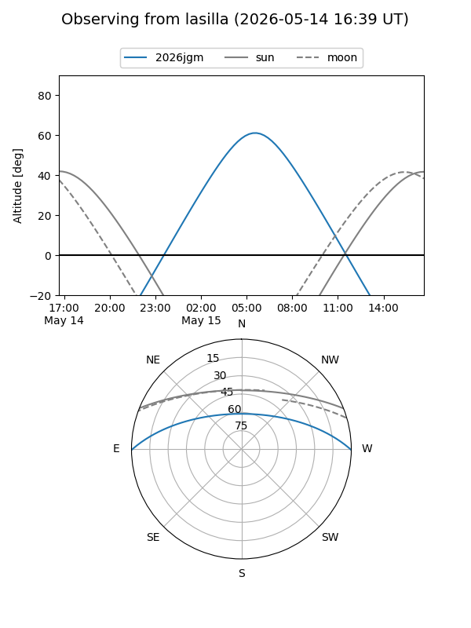
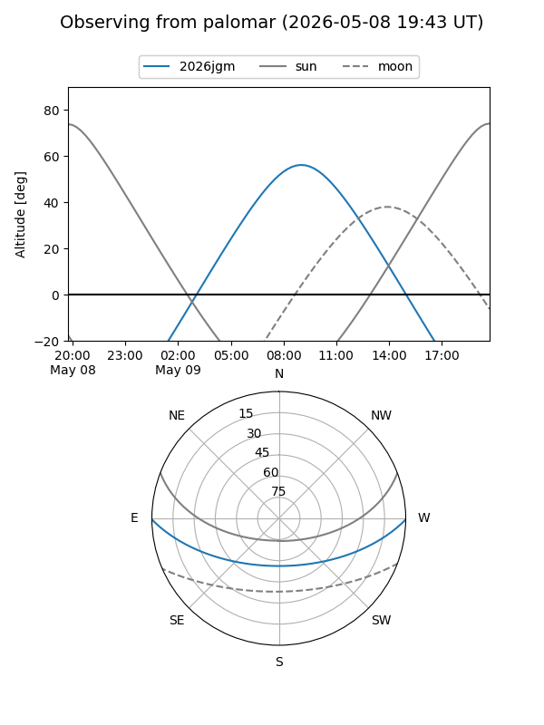
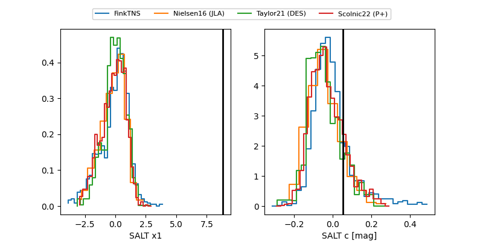

2026jgm
Target 2026jgm at 2026-04-18 22:43
Aliases and brokers:
FINK: link
Lasair: link
ALeRCE: link
TNS: link
YSE: link
alt names
ZTF26aasjrxx (ztf,fink_ztf)
2026jgm (tns,yse)
ATLAS26efd (atlas)
PS26bay (panstarrs)
Coordinates:
equatorial (ra, dec) = 245.2069,-0.36954
equatorial (HMS+DMS) = 16:20:49.66,-00:22:10.36
galactic (l, b) = (13.1801,+32.73241)
Flags:
Photometry:
last ztfg=19.50, ztfr=19.36
5 ztfg, 2 ztfr detections
Lightcurve

Visibility


Additional plots
